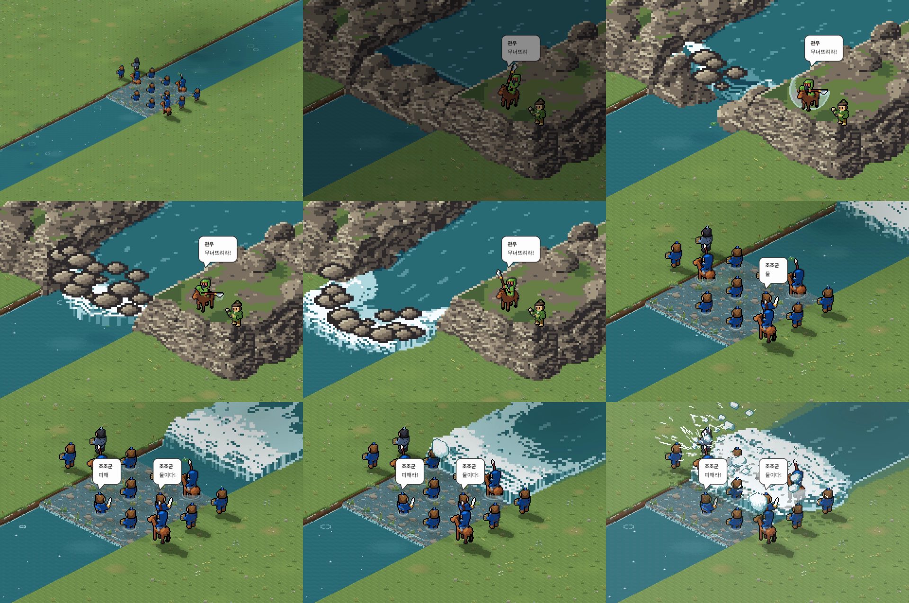
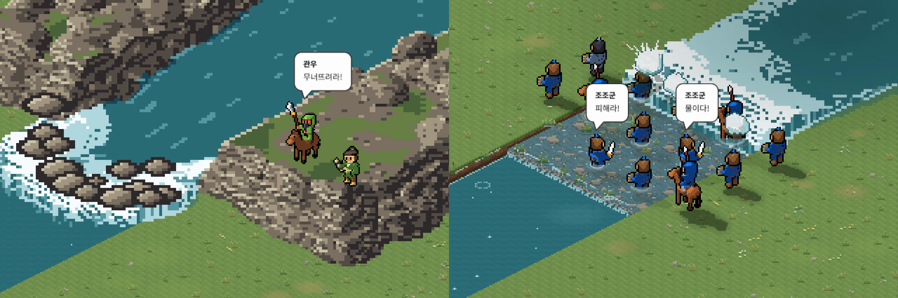

수공 3초 데모
백하 둑 붕괴를 전투맵에서 3초로 재생한 게임 캡처입니다. 둑 장면과 여울 장면 둘로 나눴고, 두 곳은 한 화면에 잡히지 않습니다. 영상 앞 1초는 연출 전에 서 있는 장면입니다.
go run ./cmd/_uidemo-vm -ui suigong -stage B25 -frames 250 -mp4 reports/uidemo/suigong.mp4시간 순서
| 시각 | 장면 | 화면 |
|---|---|---|
| 0.0~0.5초 | 여울 (2배율) | 여울을 건너는 조조군 위로 화면이 검게 가라앉습니다. |
| 0.5~1.0초 | 둑 (4배율) | 밝아지면 바위 협곡과 둑, 언덕 위의 관우·미축이 보입니다. 관우가 "무너뜨려라!"를 외칩니다. |
| 1.0~1.6초 | 둑 (4배율) | 바위 둑이 가운데부터 터지고, 바위가 물에 실려 구르다 잠깁니다. |
| 1.6~2.5초 | 여울 (4배율) | 컷으로 넘어갑니다. 병사 둘이 상류로 돌아서 "물이다!", "피해라!"를 외치고, 물머리가 우상단에서 들어옵니다. |
| 2.5~3.0초 | 여울 (4배율) | 물이 병사들을 덮고 물보라가 튀며 화면이 하얘집니다. |


이번에 바꾼 것
- 맵 분리. 여울을 강 하류로 14칸 더 내렸습니다. 둑 장면에서 여울 장면으로는 카메라 이동 없이 컷으로 넘어갑니다.
- 바위. 협곡 언덕과 둑을 물과 같은 방식(높이장을 도트로 찍기)으로 그렸습니다. 절벽 타일과 자루 그림은 뺐습니다.
- 관우·미축. 둑 위쪽 언덕 꼭대기에 서서 좌하단을 봅니다.
- 4배율. 둑 장면과 여울 장면 모두 4배율입니다. 말풍선은 그 배율에서 읽히도록 두 배로 키웠습니다.
- 병사의 외침. 둘이 상류(우상단)로 돌아서 "물이다!", "피해라!"를 외칩니다.
남은 점
- 언덕 위 관우·미축에게 그림자가 없습니다. 그림자가 땅 높이에 깔려 바위에 가려집니다.
- 외치는 병사는 우상단(상류)을 봅니다. 정확히 오른쪽은 아닙니다.
- 대본(25장 c25-e06)의 관우 대사는 "……터라."인데 데모는 "무너뜨려라!"입니다. 어느 쪽으로 갈지 정해 주세요.
- 대본의 이 장면은 밤인데 데모는 낮입니다. 25장 이야기 장면에는 아직 연결하지 않았습니다.
- 구운 시트는 2048×1661로, 재생할 때 VRAM 약 14MB입니다(이전 19MB).